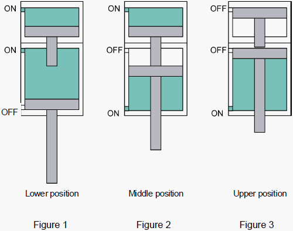
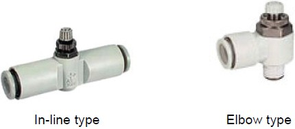
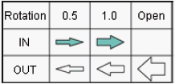
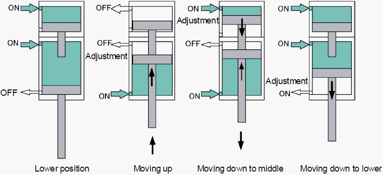

A7-1 How to adjust about loader tray Up / Down cylinder speed ( 1 )
Loader tray Up / Down cylinder speed adjustment for NS-6000 / NS-7000
Loader: Tray Up/Down Cylinder Speed Adjustment
Outline
Tray up/down cylinder has three positions (Upper, Middle, Lower) by inputting the air into the three ports (Upper, Middle, Lower).

Lower position : Air is supplied to the upper and middle ports. (Figure 1)
Middle position : Air is supplied to the upper and lower ports. (Figure 2)
Upper position : Air is supplied to the lower port. (Figure 3)
Adjustment
For the speed of the cylinder, use the needle of the speed controller.
NS6000, NS7000 series employ the Elbow type for the cylinder and In-line type in the middle of the
pipe which enable the control of two-way flow (Meter-in, Meter-out).

1. Basic Usage
(1) Elbow type -> Meter-Out control (Speed control)
(2) In-line type -> Meter-In control (Spring out prevention)
2. Factory default
IN : Meter-in (In-line type)
OUT : Meter-out (Elbow type)
Needle rotation from the fully closed speed controller


3. Speed Control
[Lower -> Upper] To slow down:
Loosen the lock knob of the elbow type speed controller in the middle port.
Turn the adjustment needle to the right and control the air flow.
[Upper -> Middle] To slow down:
Loosen the lock knob of the In-line type speed controller in the upper port.
Turn the adjustment needle to the right and control the air flow.
[Middle -> Lower] To slow down:
Loosen the lock knob of the elbow type speed controller in the lower port.
Turn the adjustment needle to the right and control the air flow.